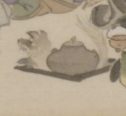

背に茶釜を背負ったような姿の狸。炉の中に座っている。
著作者：靖々光一（山本光一）／出典：親書誌：U426_nichibunken_0098：滑稽百鬼夜行絵巻；コッケイヒャッキヤギョウエマキ／日付：2008／資源識別子：U426_nichibunken_0098_0003_0001
Copyright (c)2010- International Research Center for Japanese Studies, Kyoto, Japan. All rights reserved.